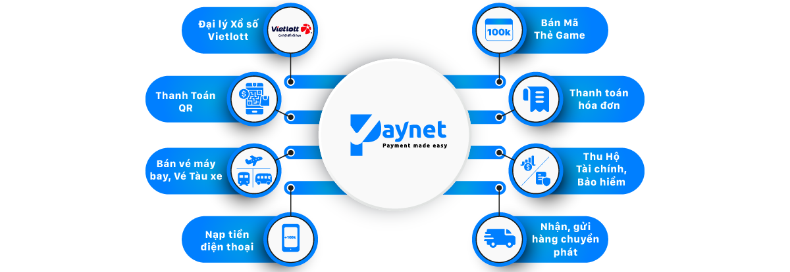
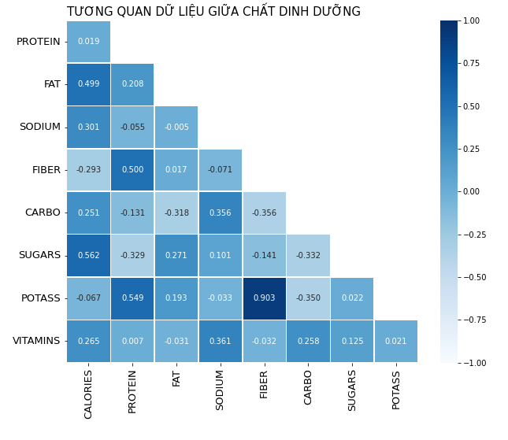

SQL to extract, clean data from Database Warehouse Create a dashboard with Power BI to help the sales department compare revenue growth in the first 3 months of 2023
Create a dashboard with Power BI to help HR Vinatti keep track of timekeeping, employees working remotely, being sick in the covid situation

Use PowerBI DAX to create calculated metrics, thereby building a dashboard for measuring business decision-making metrics

Use SQL to extract and clean data before exporting data to build dashboards with Power BI
Create a dashboard with Power BI to give businesses an overview of the business situation in previous years

Use Python(Pandas, Numpy, Seaborn, Matplotlib.pyplot ) to analyze nutrient correlations